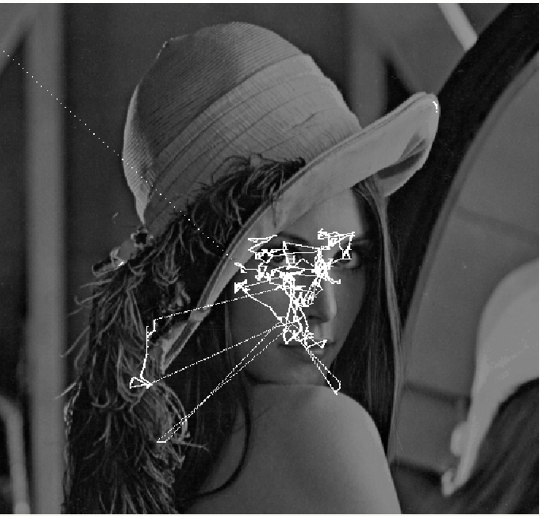
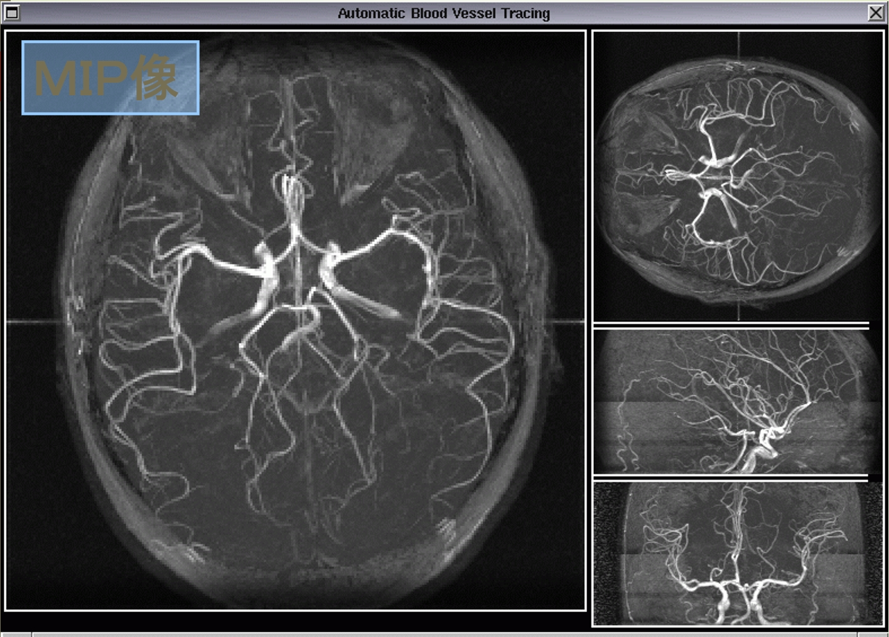
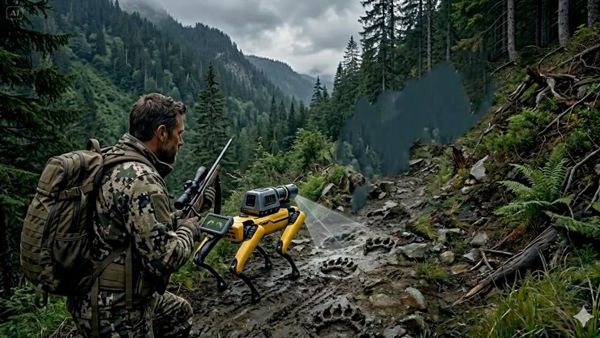
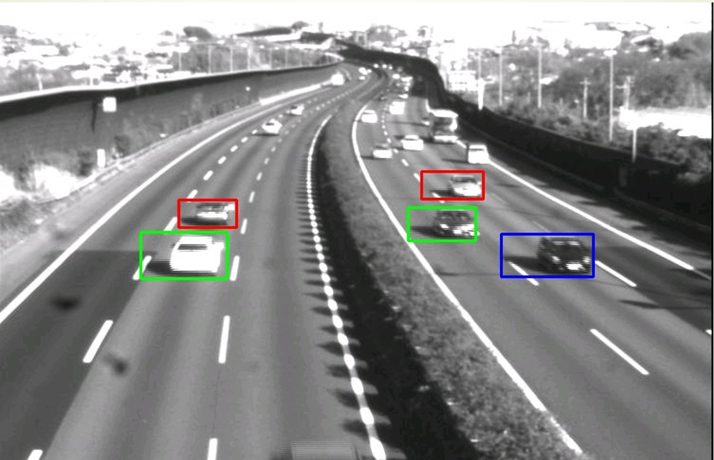
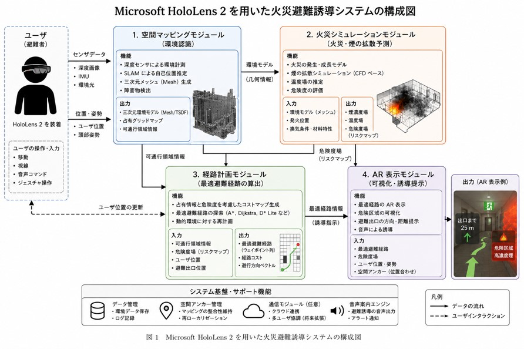
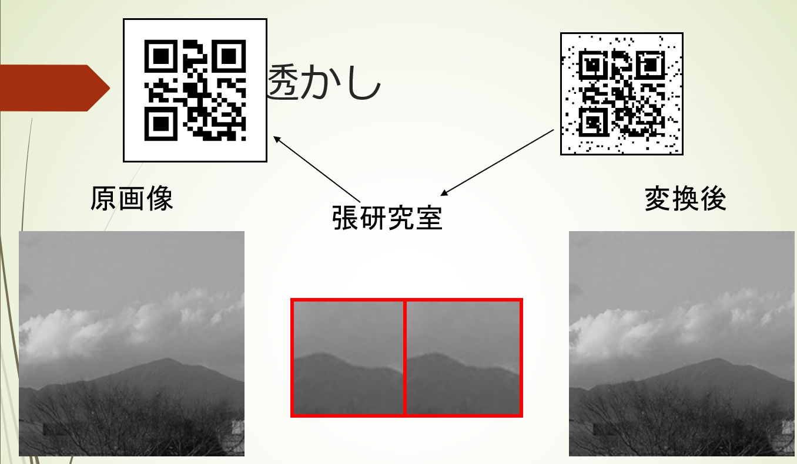

Computer Vision and Image Processing
「何を見ているか？どうしてこう見えているか？どうやって見るか？」
Welcome to vision lab: Boys be ambitious
“我们在看什么？为什么这样看？如何看？”
Welcome to vision lab: Boys be ambitious
人間の視覚認識のメカニズムに基づき、コンピュータビジョンの手法を用いて、人間の視覚認識活動を補助し、支援するアプリケーションを作成します。 基于人类视觉识别机制，利用计算机视觉技术，开发辅助人类视觉活动的应用程序。
当研究室の精神であり、研究活動において学生たちを大いに啓発する言葉です。日々の地道なプログラミングや実験（耕耘）こそが、最終的な革新（収穫）をもたらします。 这是本研究室的指导精神。在学术探索中，脚踏实地进行每一次编程与实验（耕耘），不急功近利，最终必然会迎来丰硕的学术创新与成果（收获）。
📍 研究室訪問日程： 毎週（月、水曜日）の午後１時半から３時、20-408号室。
👨🏫 指導教員： 千代原 善俊 (張)
📍 访问日程： 每周一、三下午 1:30 至 3:00，20-408 号室。
👨🏫 指导教员： 张 教授 (千代原 善俊)

中心窩両眼能動システムの注視点シフト、視線運動を用いた個人認証の研究。中心窝双眼主动系统的注视点转移、利用视线运动进行个人认证等。

脳組織のセグメンテーション、医用画像の高速な３次元再構成など。脑组织分割、医学图像的高速3D重建与脑血管追踪。

Intel RealSense や LiDAR により“賢く”なり、熊の追い払いや畑の見張りを支援。搭载多重传感器，应用于农田智能监控、驱赶熊类以及辅助猎人追踪。

画像処理による交通監査、動画像における移動物体の自動検知と追跡。图像处理交通监控、监控视频中的移动物体自动检测与追踪系统。

ホロレンズ (HoloLens 2) による火災避難誘導・防災訓練システムの開発。使用 HoloLens 2 建立火灾避难引导与沉浸式防灾训练系统。

ウェーブレット変換による画像の電子透かし、QRコード融合セキュリティ。基于小波变换的图像电子水印，以及二维码防伪融合技术。